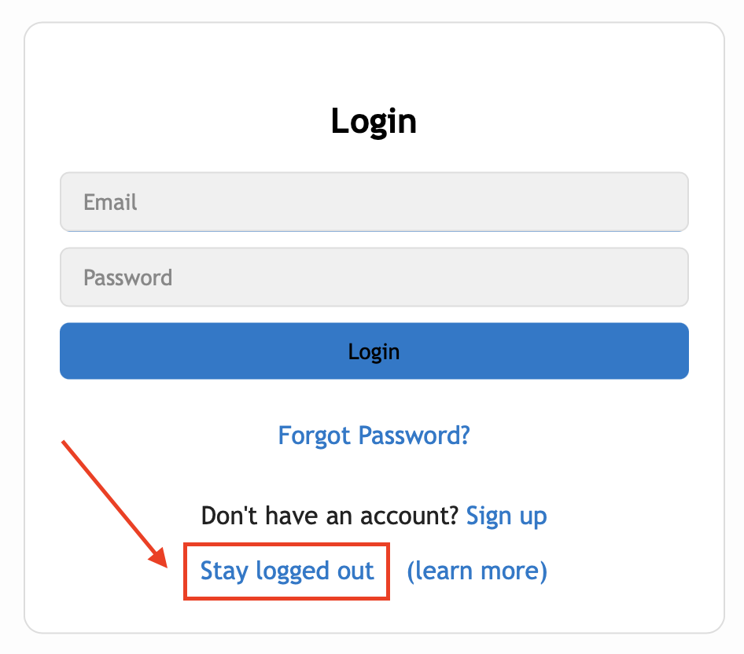

← Back to list
{{ page.title }}
Updated {{ page.date | date: "%-d %b %Y" }}We're excited to introduce Guest Mode, a new feature that will allow you to write speeches without the hassle of creating an account! To activate this feature, simply click the "stay logged out" option as in the screenshot below, and you'll be taken to the editor to start a new speech!
A few things to keep in mind:
- Currently, the website only supports one guest account (i.e. Guest Mode user) on a device.
- Any speeches created using Guest Mode, by nature, will be restricted to your device only, and will not be shareable with anyone else.
- There is currently no option to lock a guest account via password, so anyone using your device will be able to access your speeches. Please be careful!
- Speechdeb will be unable to restore any deleted Guest Mode speeches.
